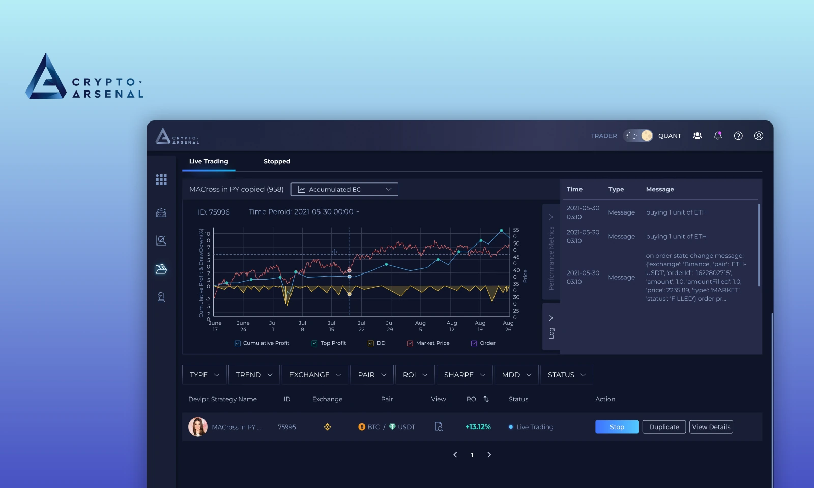

「策略賺了多少我看得到，但它現在開的是多倉還是空倉、正在賺還是賠，介面上完全看不出來。」
策略使用者啟動 / 跟單策略的一般交易者

讓使用者在 Crypto Arsenal 內就能看見策略持有的合約倉位，並安全地手動平掉當前倉位、同時讓策略繼續運行——免去跳到交易所操作、進而觸發機器人風控停策略的斷點。
就像傳統金融市場，加密市場裡的交易者透過交易所把法幣（如 USD）換成加密貨幣；交易所就像中間人，幫交易者完成買賣、並連到背後的區塊鏈。
但加密交易的門檻在於：通常得手動盯盤、手動下單，還要對市場有一定了解。於是「交易策略」出現了——策略是一段程式或演算法，幫交易者監控市場、更有效率地交易。
交易者把法幣換成加密貨幣，並透過交易策略在交易所自動交易；Crypto Arsenal 位於「策略」與「交易所」之間負責執行下單。
而 Crypto Arsenal 就是一個直接串接交易所、提供交易者自動化策略來交易的平台。它同時服務兩種角色，形成一個策略供需的生態系。
開發者建立交易機器人上架、交易者選用機器人；收益在雙方與平台之間流動。
這個模式為交易者、開發者與平台本身同時創造價值。不過策略並非 100% 全自動，往往仍需要交易者依市場狀況自己微調——這正是後來「倉位顯示與手動平倉」這個功能要解決的起點。
我以 1–2 週為節奏持續設計新功能，主責新功能的 UI flow 與畫面。多數 feature 以二手桌面研究與競品對標為基礎，不見得有一手使用者訪談——這是業界 cadence 下的真實工作模式。單一 feature 的設計流程如下：
CA 介面只呈現策略的整體績效（獲利、ROI、未實現 ROI、資產分布），卻沒直接顯示這支策略目前實際持有哪些倉位。使用者因此卡在幾個反覆出現的情境裡。
以下情境整理自一場產品討論錄音中明確提到的使用者需求，為代表性使用者情境，非一手訪談逐字稿。
「策略賺了多少我看得到，但它現在開的是多倉還是空倉、正在賺還是賠，介面上完全看不出來。」
「想確認倉位只能登入交易所，同時跑好幾支策略時，我根本分不清哪一筆是哪支策略開的。」
「已經獲利到我滿意的程度了，我想自己先落袋，而不是乾等策略設定的條件才平倉。」
「我只是想提前平掉一筆倉位，跑去交易所操作，結果整支策略被系統判定異常停掉、還救不回來。」
想看單一倉位狀態（多 / 空、數量、入場價、標記價、浮動盈虧），使用者得登入交易所後台查；CA 作為策略管理平台，卻無法提供完整的策略執行狀態。

這是整篇案例的決策核心。問題不只是「看不到倉位」，而是使用者為了控制單筆風險去交易所平倉，反而可能讓整支策略報廢——機器人偵測到自己管理的倉位突然消失、狀態錯亂，為風控只能停掉策略且無法恢復。
所以方向很明確：把平倉收進 CA 內。手動平倉只結束當下這一筆倉位、策略進入空倉，未來再符合開倉條件時機器人仍會自動開倉——這不是暫停或停止策略。
需求一旦展開很容易膨脹成「跨交易所的 all-in-one trading terminal」。為了聚焦本次要解決的核心問題，先把範圍切清楚：第一階段顯示倉位、第二階段才做站內平倉（需新版機器人支援）。
在沒有一手使用者研究的條件下，我以 Binance / Bybit / OKX 的實際介面當對標，拆解三家共通的倉位資訊欄位與開倉、平倉流程，收斂出 CA 該顯示的最小必要資訊。
倉位欄位對標
從三家交易所介面收斂出合約倉位最通用、且使用者最關心的欄位。
必要欄位
Symbol、Side（多/空）、Size、Entry Price、Mark Price 與 Unrealized PnL。
平倉流程
對標三家「市價 / 限價平倉」的操作與確認步驟，作為 CA 平倉 modal 的依據。

倉位資訊要放哪、平倉入口怎麼擺

Solution 1
把倉位資訊收進策略卡片的展開區，與該策略強綁定，使用者一眼看到「這支策略」目前的倉位，平倉入口就近放在倉位列旁。
Solution 2
以獨立倉位列表呈現，集中管理所有執行中策略的倉位；資訊完整但較難一眼對應到單一策略。
與創辦人討論技術可行性與風控邏輯後收斂方向，再把欄位與流程細修到可交付。
可行性討論
手動平倉需要新版機器人能「理解這是來自 CA 的合法操作」，否則仍會被風控判定異常。這也決定了功能先支援新建立 / 新版機器人，並要在介面上處理「舊版不支援」的狀態。
收斂結果
採 Solution 1 的「綁定單一策略」方向，精簡倉位欄位、明確區分「平倉」與「停止策略」，並補上空倉狀態的呈現。

最終把倉位顯示與手動平倉做成可點的 prototype，作為交付給工程的依據，並清楚區分「平倉」與「停止策略」避免誤觸。
Feature 1｜策略倉位顯示
在策略介面內直接看見目前持倉，不必跳到交易所。
即時倉位欄位
方向、數量、進場價、目前價與未實現損益，與「該策略」清楚綁定。
空倉狀態
沒有倉位時呈現明確的空倉狀態，避免和整體 ROI 混淆。
Feature 2｜CA 內手動平倉
針對當前倉位主動平倉，而不終止整支自動策略。
Limit / Market
切換限價 / 市價平倉，含 Closing Price 與 Closed Qty 滑桿。
預估損益 ＋ Hover 說明
平倉前顯示預估損益與含手續費說明，降低高風險操作的誤觸。
平倉 ≠ 停策略
明確告知平倉後策略仍會繼續、未來可能再開倉。

設計交付影片
走查平倉 prototype 的完整互動與設計註釋，作為交付給工程的依據；交付影片 → 開 Jira 專案卡 → 排進工程實作。
這份實習讓我誠實面對業界 cadence：多數決策建立在二手研究與競品對標上，沒有充裕時間做一手使用者研究——但也因此學會在限制下快速收斂、持續出貨。
以 1–2 週為節奏把模糊的產品需求收斂成可交付的 flow 與畫面，跟上創辦人的產品藍圖。
手動平倉的設計必須理解機器人風控邏輯，學會把「為什麼這樣設計」講清楚、跟工程與創辦人對齊。
以二手研究與競品為基礎不等於沒有依據；重點是把參考來源與決策邏輯說明白，而非包裝成沒做過的事。